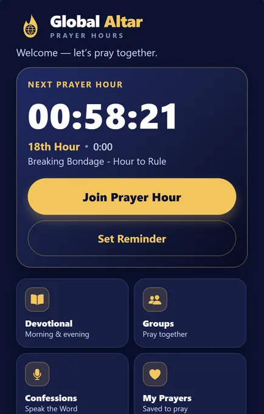
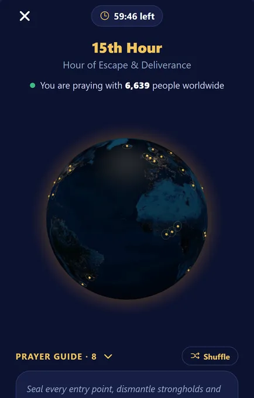
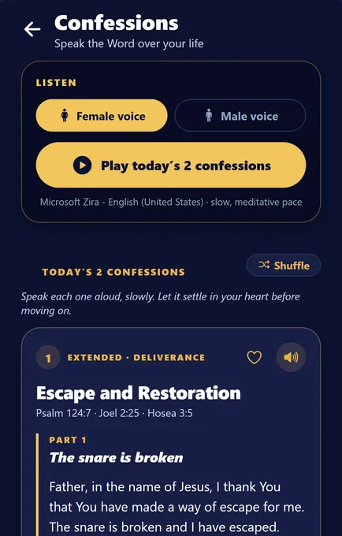
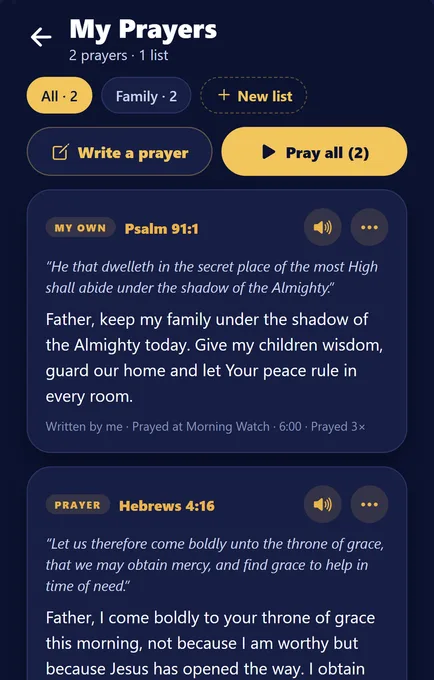
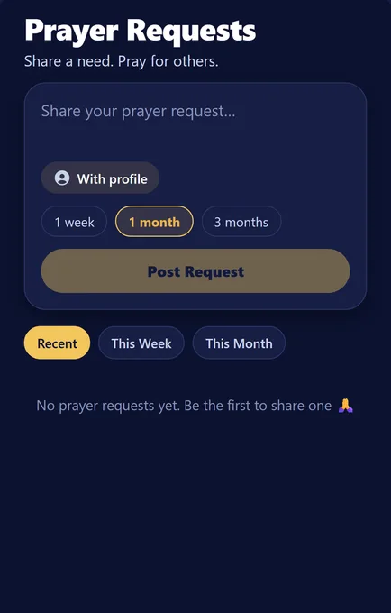
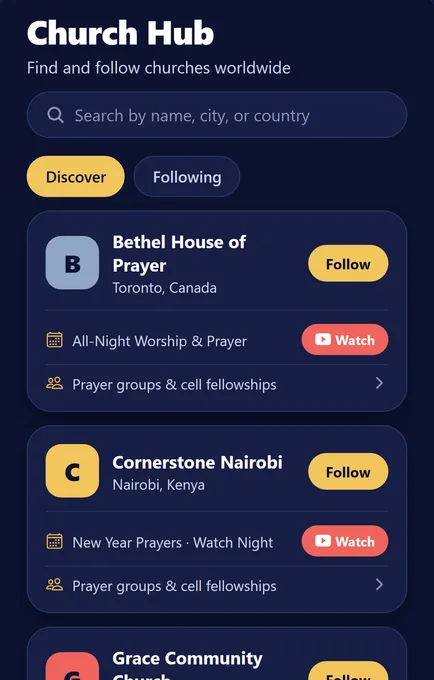

Global Altar is a free Christian prayer app that helps you keep set hours of prayer — the way the fathers and mothers of faith did — together with believers around the globe.
Now in testing on iPhone and Android · Launching on the App Store and Google Play in December 2026

The early church kept the hours. Daniel prayed three times a day. David said, “Seven times a day do I praise thee.” Global Altar brings that rhythm back into an ordinary day: a reminder when an hour arrives, a short guided session built on scripture, and a live view of believers praying with you at the same moment.
Everything in the app is built on the Word: every prayer sits under the verse it comes from, in the King James Version.
“Evening, and morning, and at noon, will I pray, and cry aloud: and he shall hear my voice.” Psalm 55:17 (KJV)
“Pray without ceasing.” 1 Thessalonians 5:17 (KJV)
Each hour has its own theme, anchor scripture and guided prayers. The hours follow your local time, so as the clock strikes in each time zone, prayer sweeps around the world like a wave.
Join any hour and pray for up to sixty minutes with a living globe of believers, a real count of who is at the altar with you, and six to eight guided prayers drawn from that hour’s theme. Leave and come back — your session picks up where you left it.
Speak the Word over your life. Daily confessions, scripture memory verses and short prayers — read them, hear them spoken aloud, or sing along with a confession song.
A short reading, a verse and a prayer to open the day and to close it. A fresh devotional rotates in each day of the week.
Save any prayer with a tap, write your own with a short title, organise them into lists like “Family” or “Church”, reorder them, and pray through a list one prayer at a time, marking each as prayed. Attach a prayer to an hour and it joins your session.
Share a need with the community — with your name or anonymously — and tap “I just prayed” for others. Requests expire on the date you choose.
Follow your church, see its services and events, and join its prayer groups and cell fellowships. Leaders can open a prayer line — a phone bridge or video link — so the whole group prays together in real time.
A gentle nudge before each hour, for one hour or all of them. Your streak and time prayed are tracked honestly — only the minutes you actually spend at the altar.
Current headlines from across the Christian world, in one quiet tab — no ads, no noise.





Global Altar gives a church a page of its own inside the app, so members pray together between Sundays:
Want your church listed?
We are onboarding churches ahead of launch. Send us your church name and city and we will set it up.
Global Altar is in closed testing on iPhone (TestFlight) and Android (Google Play). Public release on both stores is planned for December 2026.
Testers are added by email address: tell us the Apple ID or Google account you use on your phone and we will send the invitation. Already invited? Open the link you were sent.
Yes. The app is free, with no advertising and no in-app purchases. It is a ministry, not a business.
No. You can pray, read confessions and devotionals and save prayers as a guest. An account (email, or Sign in with Apple) is only needed to post prayer requests, join groups or keep your prayer stats across devices.
All scripture is quoted from the King James Version. Every prayer is written under the verse it draws from.
Nothing is lost. Any hour — past or upcoming — can be opened from the home screen, and every minute you spend praying counts toward your stats, whatever the time of day.
They follow your phone’s local time. 6:00 AM is the Morning Watch wherever you are, which is what makes prayer travel around the world through the day.
As little as possible. No tracking, no ads, no selling of data. Read the privacy policy — it is short and in plain English.
Closed testing is running now on iPhone and Android. The public release on the App Store and Google Play is planned for December 2026.